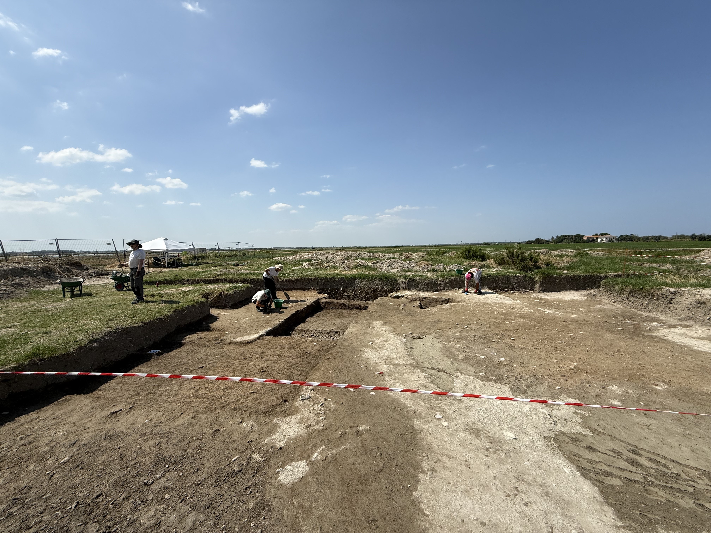
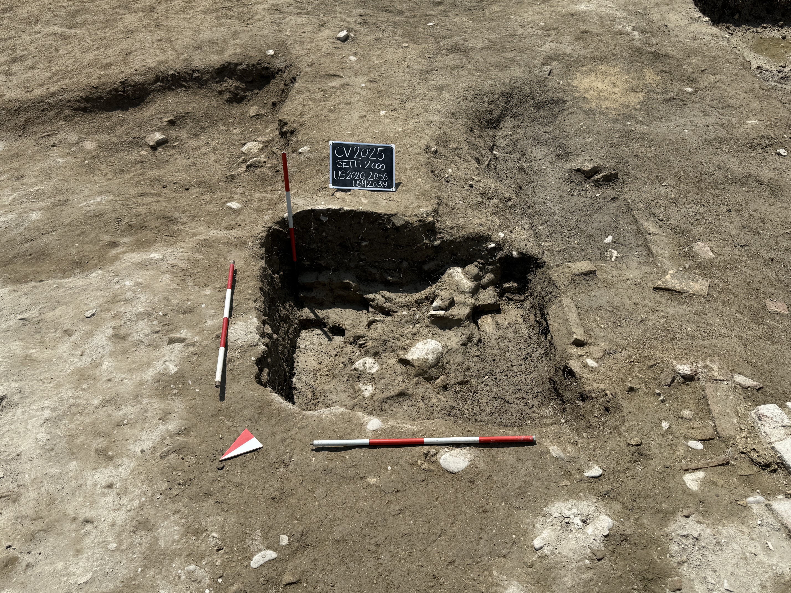
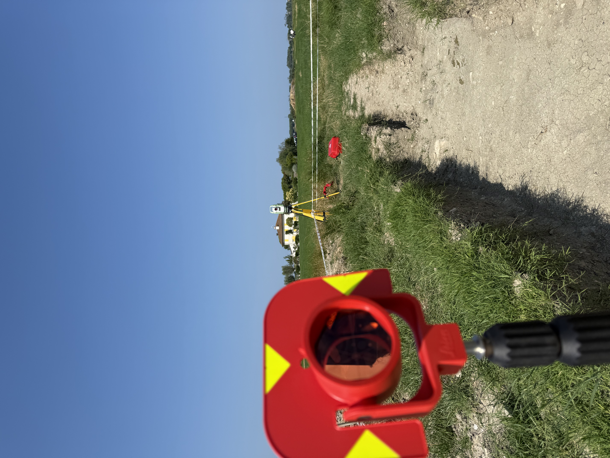
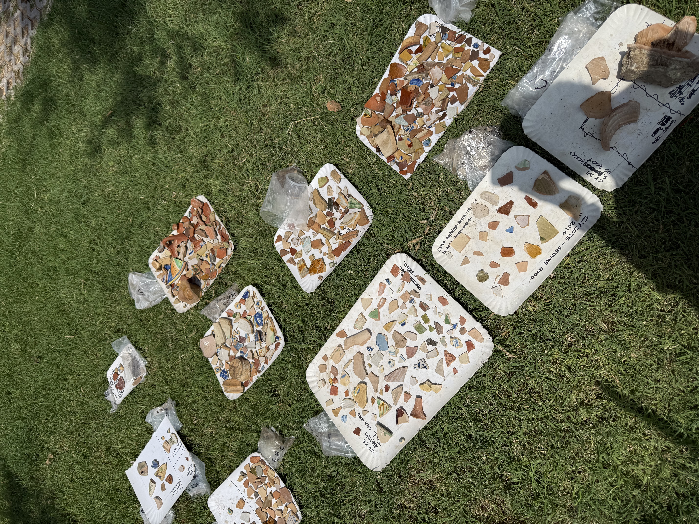
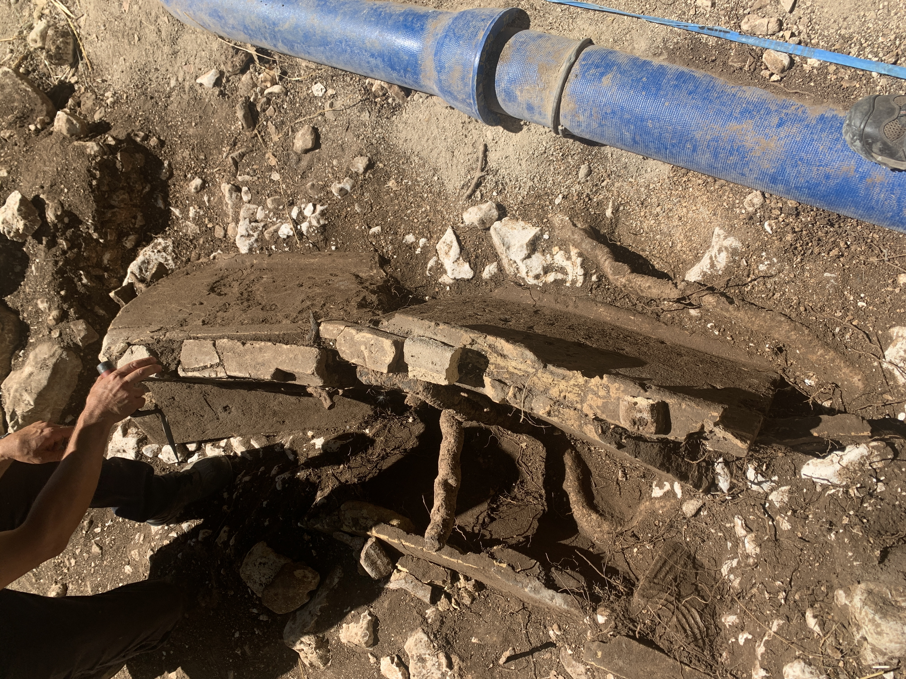
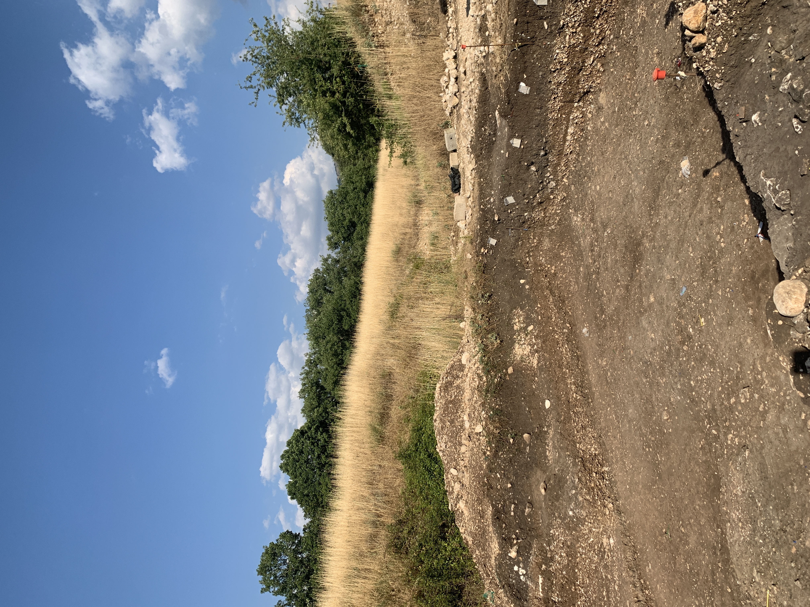
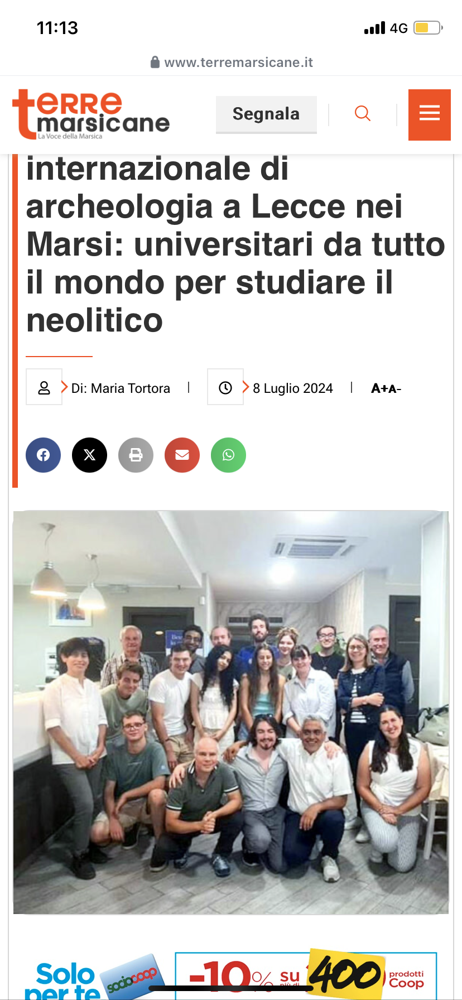
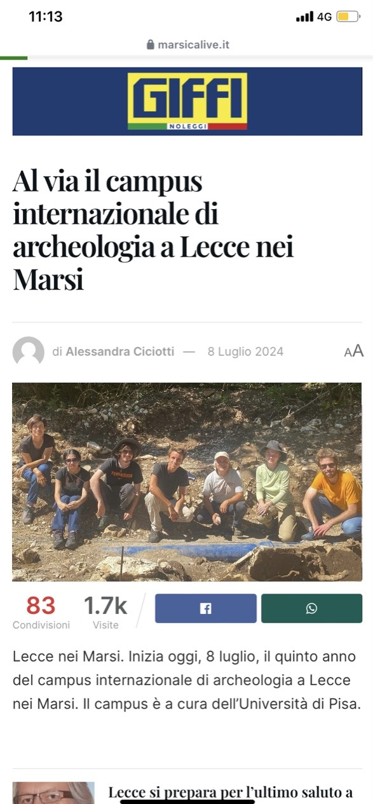

Excavation · Survey · Documentation
Archaeological fieldwork
Working across prehistoric, Roman, and medieval contexts in central and northern Italy.
Cervia Vecchia
University of Bologna · June–July 2025
Directed by Professors Marco Cavalazzi and Mila Bondi, with specialist work by Professor Paolo Forlin, the excavation sought to recover the foundations of Cervia Vecchia. This medieval settlement on northern Italy’s Romagnol coast was closely tied to salt production in its surrounding wetlands. In 1697, after centuries of malaria, Pope Innocent XII ordered the town moved closer to the coast to create Cervia Nuova.
The abandoned settlement was heavily quarried and later cultivated. Because even foundations had been spoliated, careful stratigraphic excavation was essential for distinguishing artificial cuts and later fills.

While clearing an upper layer, I noticed the edge of an artificial pit. At Professor Forlin’s encouragement, I followed the cut downward over several days, revealing the southernmost known extent of a fortification whose northwestern limits had remained uncertain. The later refuse pit had stopped at the earlier foundations, preserving evidence of a brick-faced wall with a thick stone-and-mortar core—a form common in 17th-century Romagna.


Our work also included pottery reconstruction, drone recording, stratigraphic analysis, Total Station survey, and public engagement at the site.

Roman salvage campaign
Lecce nei Marsi · August 2024
While I was working at a Neolithic site near the Abruzzese town of Lecce nei Marsi, the Soprintendenza Archeologia, Belle Arti e Paesaggio of Abruzzo requested volunteers from the University of Pisa excavation to assist with the excavation, documentation, and removal of three Roman burials obstructing a planned pipeline.
The cappuccina-style burials were associated with the rural agricultural communities of the Fucino Plain around the 1st or 2nd centuries CE. Large terracotta tiles had been leaned against one another to form simple prisms. No grave goods were recovered or identified. The well-preserved skeletons were meticulously recorded and packaged for storage and testing by the Ministry of Culture.
The experience introduced me to bioarchaeology and to the importance—and challenges—of salvage campaigns. Pressure from the pipeline contractor and local government meant the excavations had to be conducted quickly.


Neolithic excavation
University of Pisa · July–August 2024
The University of Pisa has conducted a multi-season excavation campaign on the high Fucino Plain in the Apennine mountains of Abruzzo, near Lecce nei Marsi in the Province of L’Aquila. The site is associated with the early Neolithic in central Italy.
The settlement contains evidence of early agricultural practice, including zooarchaeological evidence of cattle and goat domestication and a significant ceramic tradition. Although no structural foundations survived, excavation recovered pottery, ochre, faunal remains, and plant remains typically preserved through charring. Careful stratigraphic recording was crucial. Our methods included sieving, wet screening, flotation, total station measurement, and 3D site scanning.
The work was directed by Professor Cristiana Petrinelli Pannocchia.


